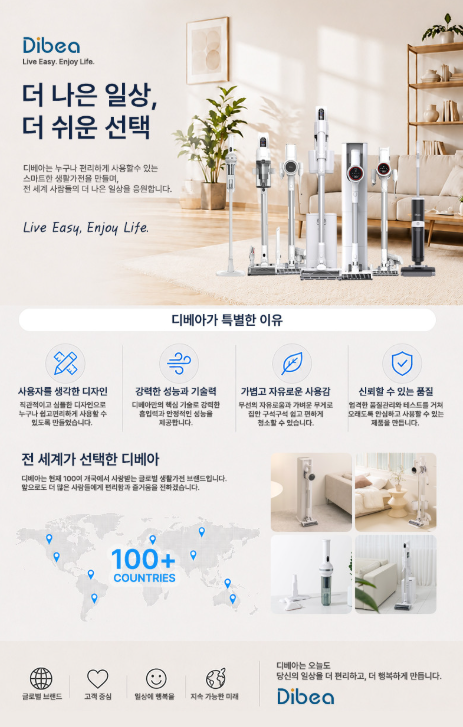
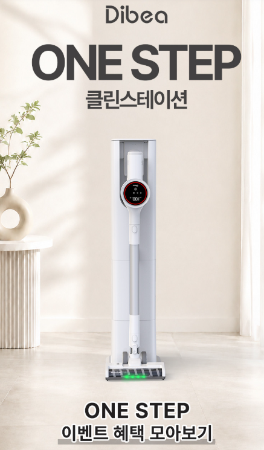
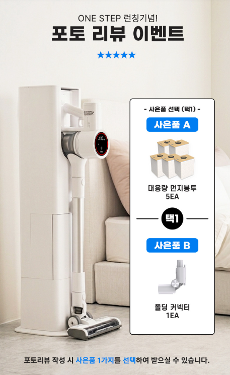
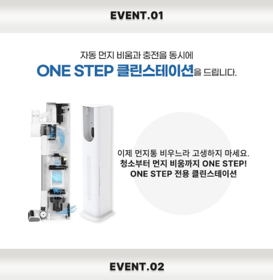

이 포스팅은 쇼핑커넥트 활동의 일환으로 판매 발생 시 수수료를 제공받습니다.
디베아 무선청소기
성능과 구매 전 확인사항
디베아 무선청소기는 선이 없는 무선 방식으로 집안 곳곳을 편리하게 청소할 수 있는 생활가전 제품입니다. 거실이나 침실은 물론 좁은 공간과 바닥 청소에도 활용하기 좋으며, 무선으로 사용할 수 있어 청소할 때 전원선의 제약을 줄일 수 있다는 장점이 있습니다.

디베아 무선청소기 구매 가이드
디베아 무선청소기 현재 가격 확인
가격과 재고, 옵션과 할인 혜택은 판매 시점에 따라 달라질 수 있습니다.
1. 디베아 무선청소기는 어떤 제품일까?
디베아 무선청소기는 전원선을 연결하지 않고 사용할 수 있는 무선 청소기로, 일상적인 집안 청소를 간편하게 할 수 있도록 구성된 제품입니다. 청소 공간을 이동할 때마다 전원선을 옮겨야 하는 번거로움을 줄일 수 있어 거실과 방, 복도 등 여러 공간을 한 번에 청소하려는 경우 활용하기 좋습니다. 다만 세부적인 흡입력과 배터리 용량, 구성품은 모델별로 차이가 있을 수 있으므로 구매 전 정확한 모델명을 확인하는 것이 좋습니다.
구매 핵심 포인트
사용 방식 무선 방식으로 이동하면서 간편하게 청소
활용 공간 거실·침실·복도 등 다양한 생활 공간
사용 편의성 전원선 없이 필요한 공간으로 이동 가능
구매 전 확인 정확한 모델명·배터리·흡입력·구성품 확인
2. 무선 방식과 이동 편의성
무선청소기의 가장 큰 장점 중 하나는 청소할 장소를 옮길 때 전원선을 별도로 연결하거나 정리하지 않아도 된다는 점입니다. 거실에서 침실로 이동하거나 가구 주변을 청소할 때도 비교적 자유롭게 사용할 수 있어 빠르게 청소를 끝내고 싶은 경우 편리합니다. 특히 매일 간단하게 바닥을 관리하려는 경우에는 무선 방식의 편리성이 중요한 선택 기준이 될 수 있습니다.

디베아 무선청소기의 실제 구성과 디자인을 확인하고 구매하려는 모델의 상세 옵션을 함께 살펴보세요.
3. 집안 바닥과 생활 공간 청소
집안에서는 먼지나 머리카락, 작은 생활 쓰레기 등이 바닥에 쉽게 쌓일 수 있습니다. 무선청소기를 활용하면 필요한 공간을 바로 청소할 수 있어 일상적인 바닥 관리에 편리합니다. 거실처럼 넓은 공간뿐만 아니라 침실이나 복도처럼 청소 면적이 비교적 작은 공간에도 사용할 수 있습니다.
청소할 공간의 바닥 재질이나 먼지의 종류에 따라 필요한 브러시가 달라질 수 있으므로 구매 전 기본 헤드와 추가 구성품이 어떤 형태로 제공되는지 확인하는 것이 좋습니다.
디베아 무선청소기 가격 확인
옵션과 혜택, 배송 조건은 판매 시점에 따라 달라질 수 있습니다.
4. 배터리와 사용 시간 확인
무선청소기는 배터리로 작동하기 때문에 한 번 충전했을 때 어느 정도 시간 동안 사용할 수 있는지가 중요한 부분입니다. 청소 공간이 넓거나 한 번에 여러 공간을 청소하려는 경우에는 배터리 용량과 사용 시간이 실제 사용 편의성에 영향을 줄 수 있습니다. 또한 충전 방식과 충전 시간, 배터리 교체 가능 여부도 모델에 따라 다를 수 있으므로 제품의 상세 사양을 함께 확인하는 것이 좋습니다.

구매 전 실제 구성과 포함된 액세서리, 배터리 관련 옵션을 함께 확인하세요.
5. 무게와 손목 부담
청소기를 사용할 때 본체 무게와 손잡이 구조도 중요한 요소입니다. 바닥만 청소하는 경우뿐 아니라 소파나 침대 주변, 가구 틈새처럼 청소기를 들어 올려야 하는 공간도 있기 때문입니다. 장시간 사용하거나 여러 공간을 연속으로 청소할 계획이라면 제품의 무게와 손잡이 형태를 미리 확인하는 것이 좋습니다.
6. 먼지통과 필터 관리 방법
무선청소기는 먼지를 먼지통에 모으는 방식이 일반적이므로 청소 후 먼지통을 비우고 내부를 관리하는 것이 중요합니다. 먼지통에 먼지가 지나치게 많이 쌓이면 청소 효율에 영향을 줄 수 있으므로 사용 후 상태를 확인하는 것이 좋습니다. 필터 역시 주기적으로 먼지를 제거하고 세척 가능 여부를 제품 설명서에 따라 확인해야 합니다.

7. 구매 전 체크리스트
- 정확한 디베아 무선청소기 모델명을 확인합니다.
- 흡입력과 사용 모드 등 주요 성능을 확인합니다.
- 배터리 용량과 최대 사용 시간을 확인합니다.
- 충전 시간과 충전 방식을 확인합니다.
- 제품 무게와 손잡이 구조를 확인합니다.
- 기본 헤드와 추가 브러시 등 구성품을 확인합니다.
- 먼지통과 필터의 관리 및 세척 방법을 확인합니다.
- 배송, 교환, 반품과 보증 조건을 확인합니다.
다른 무선청소기도 함께 비교해보세요
싸게살래 가전·디지털 목록에서 다양한 무선청소기와 생활가전 구매 가이드를 함께 비교해보세요.
디베아 무선청소기 최종 판매 조건 확인
정확한 모델, 구성, 가격과 배송 조건은 연결된 판매처에서 최종 확인하세요.
자주 묻는 질문
디베아 무선청소기는 어떤 공간에서 사용하면 좋나요?
거실과 침실, 복도 등 일반적인 생활 공간의 바닥 청소에 활용하기 좋습니다. 세부적인 사용 범위와 적합한 청소 환경은 정확한 모델의 구성과 브러시 종류를 확인하는 것이 좋습니다.
무선청소기는 한 번 충전하면 얼마나 사용할 수 있나요?
사용 시간은 배터리 용량과 청소 모드에 따라 달라질 수 있습니다. 최대 사용 시간과 실제 사용 시간에는 차이가 있을 수 있으므로 구매 전 판매 페이지에 안내된 배터리 및 사용 시간 정보를 확인하는 것이 좋습니다.
디베아 무선청소기의 필터는 관리해야 하나요?
청소기를 꾸준히 사용하면 필터에 먼지가 쌓일 수 있으므로 정기적으로 상태를 확인하는 것이 좋습니다. 필터의 세척 가능 여부와 관리 방법은 모델별 설명서를 기준으로 확인해야 합니다.
온라인 가격은 계속 같은가요?
쿠폰, 판매자, 재고와 행사에 따라 가격이 달라질 수 있으므로 최종 결제 화면에서 현재 가격과 할인 혜택을 확인해야 합니다.
함께 살펴볼 콘텐츠
싸게 살래
꼼꼼하게 비교하고 똑똑하게 사는 쇼핑 가이드입니다. 가전·디지털부터 생활용품까지 다양한 상품의 구매 정보를 제공합니다.